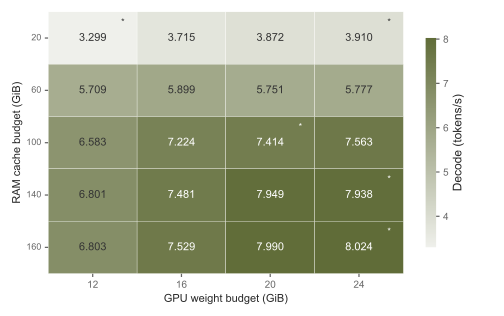
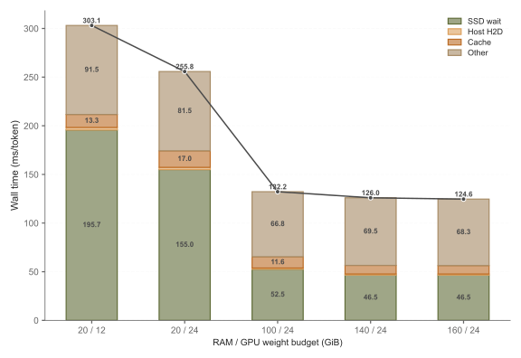
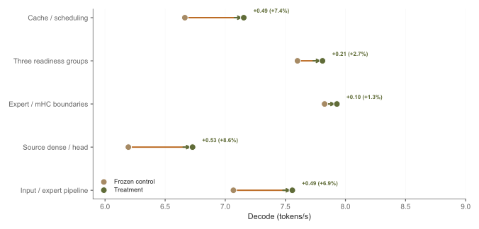

Cache coordination
Incremental residency indexes, cached replacement keys and canonical warm reuse reduce host work while DMA leases protect source storage.
Model capacity should not end at the edge of VRAM. LUMI brings SSD, RAM and GPU memory together to make large-model inference local.
160 GiB host cache · 8K capacity
First 200 decode forwards · 2 processes
Separate operating points.
Not a cross-model speed ranking.
Sparse computation does not remove the cost of storing and moving weights. LUMI coordinates ownership, readiness and numerical execution across the entire decode path.
Page-aligned expert rows
Source payload + calibration
Bounded, leased cache
Completion-protected sources
Stable GPU slots
Readiness-aware execution
Logical data and ownership flow. Arrow lengths do not encode measured latency.
Incremental residency indexes, cached replacement keys and canonical warm reuse reduce host work while DMA leases protect source storage.
Resident, RAM-hit and SSD-filled experts use separate readiness fences inside stable graphs, with one source-order merge.
Dense/head and expert/mHC fusion are admitted only when layout, scaling, rounding and accumulation contracts are met.
Built on FreeToken's serving/offload foundation and earlier LUMI paths. The evaluated extensions coordinate these components; LUMI does not claim to invent tiering, LRU or CUDA Graphs. The host SSD-completion barrier remains.
All values on this page follow the supplied manuscript. Decode excludes loading and prefill; allocated context is not actual input length. No external-engine speedup is claimed.

Table V. V4.1 Flash, source precision, 8K capacity. 20 coordinates / 25 processes. * marks two-process pooled cells; other cells have one process. GPU budget includes dense weights. Experimental 6 GiB host floor; no confidence intervals inferred.

Table VI. Exclusive ms/token, pooled at each configuration. “Other” includes queued GPU/DMA dependencies, not only CPU work. Rounded bucket sums can differ from reported totals by 0.01 ms. The connected totals are a visual guide across configurations.
Each row compares a mechanism bundle to its own frozen control, using three alternating pairs.
The first three rows keep expert capacities fixed. The final two also recover storage or change capacity.
These gains must not be chained into a cumulative speedup.

Table IV; final boundary row refined from Table X. V4.1 Flash, source precision. Summaries do not establish per-feature causal effects or universal gains. No significance markers or invented uncertainty are added.
Measurements use different histories, precision settings and contexts. The entries below establish deployment coverage, not equal-quality or controlled cross-model comparisons.
| Checkpoint / reported path | GPU / host cache | Decode | Context | Precision & scope |
|---|
This selector prepares a deployment guide. It does not load or switch a running model.
RTX 50 / 40 / 30 series on Linux x86_64 are the project's target families. The measured laptops are RTX 5090 Laptop (24 GB, about 184 GiB RAM, Gen5 NVMe) and RTX 5070 Ti Laptop (12 GB, 60.94 GiB RAM, local NVMe). Other configurations require compatible kernels and sufficient resources.
Start with the LUMI web UI for model preparation. Then connect the personal assistant to a healthy local LUMI API. Your model, your machine, your data.
Install Git, uv, an NVIDIA driver r580+, CUDA 13 toolkit (nvcc), and C/C++ build tools. Python 3.11+ is required; the command requests Python 3.12.
nvidia-smi nvcc --version git --version uv --version g++ --version
Paste the command. The first start installs dependencies and compiles kernels. Open http://127.0.0.1:7860.
Choose a supported checkpoint, download source weights, select Convert to FTW where required, then Load model and chat. Keep the complete converted directory.
git clone https://github.com/204265271/LUMI.git && cd LUMI && \ uv run --python 3.12 --extra accel lumi webshell
--port 8080 to change the web port.When source and FTW share a disk, reserve roughly 2.1 × checkpoint size + 20 GiB. Conversion preserves the source files. Delete originals only after integrity checks and a successful FTW load.
On separate disks, allow source size × 1.05 + 2 GiB at the FTW destination, plus system workspace. Optional sidecars need extra room.
Memory, tasks, notes and a calculator, with recoverable conversations and a separate inference monitor.
This static research page presents the project and installation guide. Companion and its monitor run with your own LUMI deployment. Opening this page does not load a model or start inference.
Windows and Linux evaluation packages and iPhone developer source are available to repository collaborators.
bash apps/companion/start.sh. Open http://127.0.0.1:8011/, enter your local LUMI API port (default 1919), query the service and select an actually served model.A Companion deployment has its own /monitor page. It reports inference state, request timing, resource usage and observed process network activity. Interpret these observations within their stated coverage; a static webpage cannot attest to local inference.
Dedicated runners and numerical checks remain model-specific. The current hosted PA has been verified with Qwen3.6-35B-A3B-NVFP4; other PA/model combinations require validation.
Research prototype. No fabricated speedups, confidence intervals or production-readiness claims.
Model forward time after prefill. Tokenization, sampling and UI/API delivery are outside the V4.1 decode timer. Loading, first-logits TTFT and complete-task latency are separate costs.
No. It denotes allocated capacity unless an actual input length is explicitly reported. The main decode measurements use short histories. Populated-state parity checks do not establish full-length prefill performance or long-document accuracy.
No. V4.1 source-precision results are distinct from low-VRAM dense caches and Muse's lossy experiment. Muse's optional mixed cache fails the provisional numerical gate. Precision choices are attached to each operating point.
No. A deployed LUMI HTTP endpoint and compatible tokenization/tool protocol are required. Muse's reported experimental runner has no connected HTTP serving. Qwen3.8-Flash-Next is a requested integration, not a measured result in the manuscript.
The iPhone app is designed for offline inference on the device. Developers can build the current source with Xcode. Signed distribution for testers is pending.
The supplied manuscript, LUMI: Efficient Large MoE Inference on a Single Laptop GPU, is the authoritative source. Imported 5070 Ti results have their stated evidence limitations. Download the underlying table values above. The full draft is not redistributed by this site.